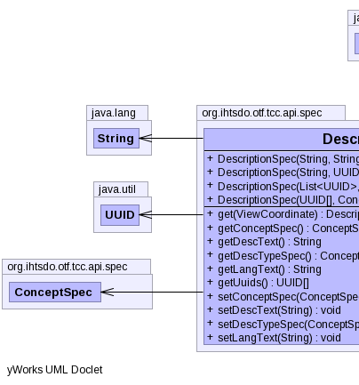
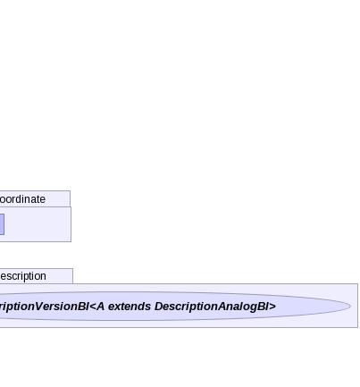

public class DescriptionSpec extends Object implements SpecBI
|  |  |
| Constructor and Description |
|---|
DescriptionSpec(List<UUID> descUuids,
ConceptSpec concept,
ConceptSpec descType,
String description) |
DescriptionSpec(String description,
String uuid,
ConceptSpec concept,
ConceptSpec descType) |
DescriptionSpec(String description,
UUID uuid,
ConceptSpec concept,
ConceptSpec descType) |
DescriptionSpec(UUID[] descUuids,
ConceptSpec concept,
ConceptSpec descType,
String description) |
| Modifier and Type | Method and Description |
|---|---|
DescriptionVersionBI |
get(ViewCoordinate c) |
ConceptSpec |
getConceptSpec() |
String |
getDescText() |
ConceptSpec |
getDescTypeSpec() |
String |
getLangText() |
UUID[] |
getUuids() |
void |
setConceptSpec(ConceptSpec conceptSpec) |
void |
setDescText(String extractText) |
void |
setDescTypeSpec(ConceptSpec descTypeSpec) |
void |
setLangText(String langText) |
public DescriptionSpec(UUID[] descUuids, ConceptSpec concept, ConceptSpec descType, String description)
public DescriptionSpec(List<UUID> descUuids, ConceptSpec concept, ConceptSpec descType, String description)
public DescriptionSpec(String description, String uuid, ConceptSpec concept, ConceptSpec descType)
public DescriptionSpec(String description, UUID uuid, ConceptSpec concept, ConceptSpec descType)
public void setConceptSpec(ConceptSpec conceptSpec)
public void setDescTypeSpec(ConceptSpec descTypeSpec)
public DescriptionVersionBI get(ViewCoordinate c) throws IOException
IOExceptionpublic UUID[] getUuids()
public String getDescText()
public ConceptSpec getConceptSpec()
public ConceptSpec getDescTypeSpec()
public void setDescText(String extractText)
public String getLangText()
public void setLangText(String langText)
Copyright © 2013 International Health Terminology Standards Development Organisation. All rights reserved.